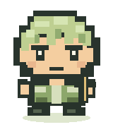

小比例 · 大个性
你的角色，
小小登场。✧
从动漫主角到球场偶像。保留标志性的发型、神情与装备，
把一张图片，变成有辨识度的 Q 版角色。
↗ 大头小身体✦ 特征保留▧ 高清 PNG
01
给角色一张参考图
02
选择你的 Q 版风格
输出 1024 × 1024
正在连接服务。静态预览不能生成图片，请使用 npm start 启动的页面。
图片仅用于本次生成，会发送至你配置的图像服务；本站不保存上传图片。
03
小小角色，大大亮相
风格示意YOUR NEXT LITTLE HERO

正在捕捉角色的独特之处
高清生成通常需要 1–3 分钟，请稍候
✧ LITTLE CHARACTER, BIG PERSONALITY ✧
✦
有辨识度，才有灵魂。
发型、服装配色、球衣号码与标志装备，都是角色的独特记忆。